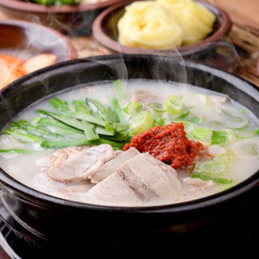
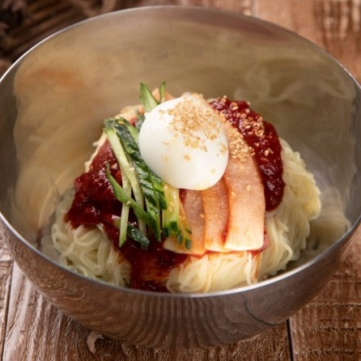
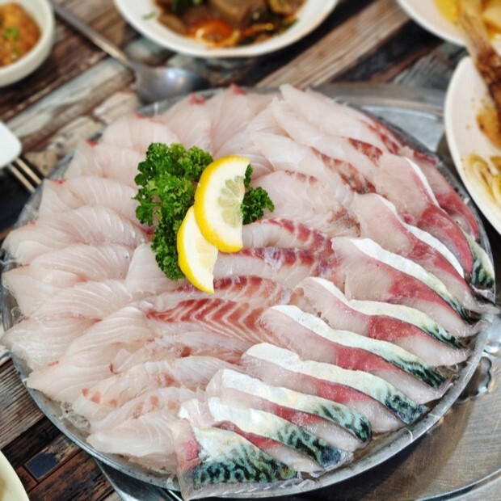
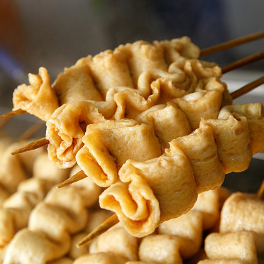
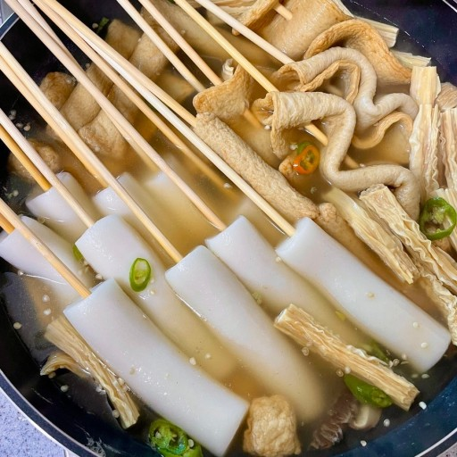

국밥
돼지 뼈로 우려낸 육수에 돼지고기 편육과 밥을 넣어 먹는 국밥. 부산을 대표하는 음식으로 뚝배기 한 그릇만 나온 것이 단출해 보이지만 진한 국물과 푸짐한 고기에 속이 든든해진다. 부속 부위에 따라 내장국밥, 머리국밥, 순대국밥 등을 선택할 수 있으며, 기호에 따라 다진 양념이나 새우젓으로 간을 맞추면 된다.

밀면
부산에 밀면이 자리 잡게 된 것은 1950년 6.25전쟁 발발 이후 부산으로 피난을 오게 된 이북민들이 고향에서 즐겨먹던 냉면을 밀가루로 만들어 먹기 시작한 데서 유래되었다.

회
부산 명물 횟집이 유명하게 된 것은 6·25 전쟁으로 부산이 임시 수도가 되면서 고위 공무원들 상당수가 이곳을 찾게 되면서부터였다고 한다. 덩치가 큰 광어나 도미를 인근의 자갈치 시장에서 구입한 뒤에 바로 급사시켜 몇 시간 정도 숙성 시킨 뒤, 회를 쳐서 내어 놓는다.

어묵
1950~60년대에는 삼진, 환공, 미도, 대원 등의 어묵공장이 들어섰다. '부산어묵'이 유명해진 이유는 국내 최대의 연근해 수산물 위판장인 부산공동어시장에서 나오는 신선한 수산물을 원료로 사용한 점을 들 수 있다.

씨앗호떡
씨앗호떡은 부산에서 빼놓을 수 없는 길거리 음식 중 하나에요. 한국전쟁 때 부산으로 피난 온 피난민들이 호떡 안에 여러 종류의 곡물 씨앗을 넣어 먹기 시작했다고 해요. 이것이 유래가 되어 1980년대 후반 남포동에서 각종 견과류를 넣어 판매하면서 씨앗호떡이 탄생했다.

물떡
물떡은 부산과 경남 일대에서 오래전부터 먹어온 음식이다. 설날 떡국 끓이려고 뽑은 가래떡을 남겨뒀다가 어묵 국물에 담가 먹었는데, 어묵이 길거리 음식이 되면서 함께 길거리로 나오게 됐다.